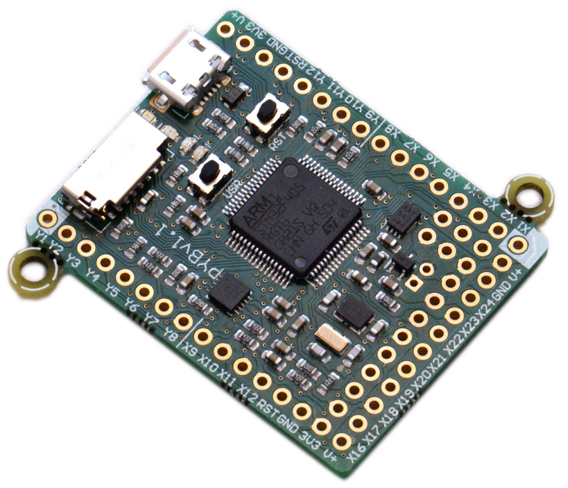
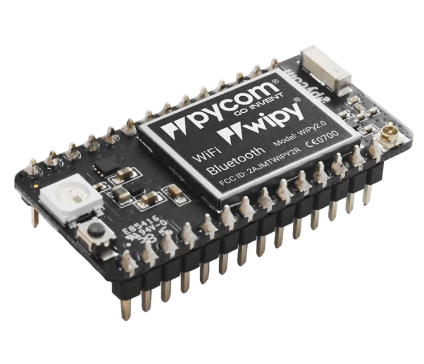
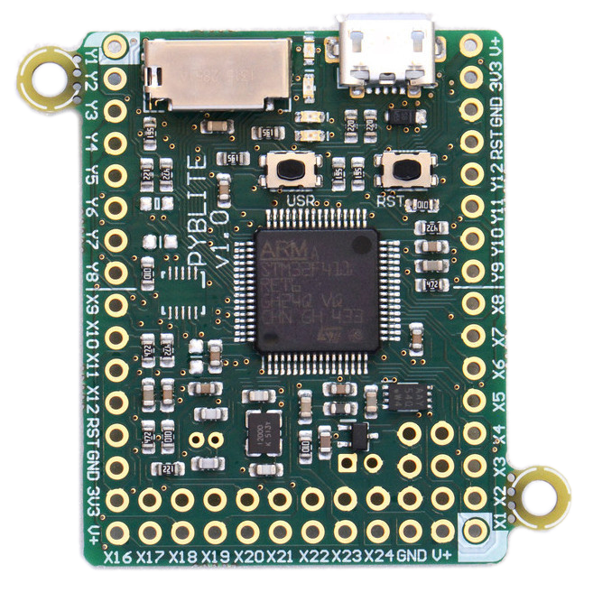
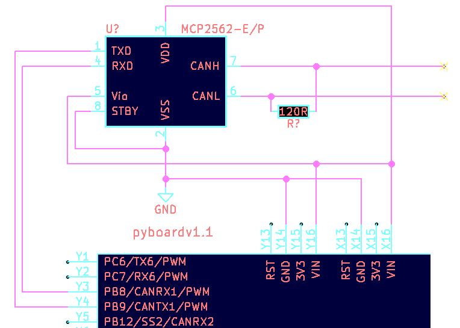
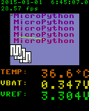
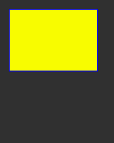
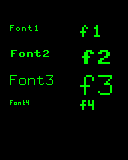

MicroPython
Python for micro-controllers.
Contents
What is MicroPython?
 micropython.org
micropython.org
“MicroPython is a lean and efficient implementation of the Python 3 programming language that includes a small subset of the Python standard library and is optimised to run on microcontrollers and in constrained environments.”
Hardware
pyboard
WiPy
Peripherals
| pyboard | WiPy | |
|---|---|---|
| SD card socket | Yes | No* |
| USB socket | Yes | No* |
| WiFi built-in | No | Yes |
| Accelerometer | Yes | No |
| Processor Power | Less | More |
Micro-Controller
| pyboard | WiPy | |
|---|---|---|
| Model | STM32F405RG | ESP32 |
| ROM | 1MB | 4MB |
| RAM | 192kB | 512kB |
| Cores | 1 | 2* |
- 1 core dedicated to networking
This Presentation
For the rest of this presentation I'll be
using the pyboard v1.1.
Note: there's more than just the pyboard and WiPy out there. Anything with a processor listed here
pyboard v1.1

Getting Started
Powering Up
- USB - also provides serial
- Power Supply - 3.5 to 10V
- Battery - 3.5 to 10V
Connect to REPL
Read Evaluate Print Loop (REPL)
$ cu -l /dev/ttyACM0
Connected.
MicroPython v1.9.2 on 2017-08-23; PYBv1.1 with STM32F405RG
Type "help()" for more information.
>>> import os
>>> os.uname().version
'v1.9.2 on 2017-08-23'
for more detail: REPL tutorial
File System
Out of the Box
The pyboard's flash contains the following
flash/
README.txt
boot.py
main.py
pybcdc.inf
sd/
(sd card content)
Browse with Python
>>> import os
>>> os.listdir('/')
['flash', 'sd']
>>> os.getcwd()
'/flash'
>>> os.listdir('.')
['main.py', 'pybcdc.inf', 'README.txt', 'boot.py']
Hot mount SD Card
The SD card can be mounted after boot.
>>> import os, pyb
>>> os.umount('/sd')
>>> os.listdir('/')
['flash']
>>> os.mount(pyb.SD, '/sd')
>>> os.listdir('/')
['flash', 'sd']
Hot mount SD Card
RaisesOSError on failure...
import os, pyb
try:
os.mount(pyb.SD, '/sd')
print("Successfully mounted SD card")
except OSError:
print("Failed to mount SD card")
Outputs
pyboard's LEDs
The pyboard has 4 LEDs onboard.| Colour | # | Pin | Pin Alias | PWM |
| red | 1 | A13 |
LED_RED |
|
| green | 2 | A14 |
LED_GREEN |
|
| yellow | 3 | A15 |
LED_YELLOW |
Yes |
| blue | 4 | B4 |
LED_BLUE |
Yes |
pyb.LED()
import pyb
red_led = pyb.LED(1)
yellow_led = pyb.LED(3)
# Basic controlls
red_led.on()
red_led.off()
red_led.toggle()
# Yellow and Blue have intensity control
yellow_led.intensity(0xff) # same as on()
yellow_led.intensity(0x00) # same as off()
Digital Outputs
Let's control the red LED directly.
import machine
# Both yield the same pin instance
pin = machine.Pin('A13', machine.Pin.OUT)
pin = machine.Pin('LED_RED', machine.Pin.OUT)
pin.names() # ['A13', 'LED_RED'] shows alternatives
# Changing pin's state
pin.high() # or: pin.on()
pin.low() # or: pin.off()
print(pin.value()) # prints 0
pin.value(1 - pin.value()) # toggles pin
PWM Output
Let's control the blue LED's intensity directly.
import machine
import pyb
pin = machine.Pin('LED_BLUE')
timer = pyb.Timer(3, freq=1000)
channel = tim.channel(1, pyb.Timer.PWM, pin=pin)
# Change blue LED's intensity manually
channel.pulse_width_percent(5)
channel.pulse_width_percent(50)
channel.pulse_width_percent(100)
Analog Output
TODOInputs
pyb.Switch()
The pyboard has a switch marked USR on board.
import pyb
switch = pyb.Switch()
switch.value()
# True when pressed
# False when not pressed
Digital Inputs
Check the same switch without usingpyb
import machine
# Pin connected to pyboard's Switch
pin = machine.Pin('SW')
pin.names() # ['B3', 'X17', 'SW'] alternatives
# The switch connects the B3 pin to GND when pressed
pin.value() # 0 when pressed
# 1 when not pressed
Input Pull Up/Down
Inputs can be pulled up, down, or left to float.
import machine
pin = machine.Pin('SW', machine.Pin.IN, machine.Pin.PULL_UP)
pin = machine.Pin('SW', machine.Pin.IN, machine.Pin.PULL_DOWN)
pin = machine.Pin('SW', machine.Pin.IN, machine.Pin.PULL_NONE)
# These 2 initialize the pin in the same way
pin = machine.Pin('SW') # defaults for SW are...
pin = machine.Pin('SW', machine.Pin.IN, machine.Pin.PULL_UP)
Analog Inputs
import machine
import time
import pyb
pin = machine.Pin('X19')
adc = pyb.ADC(pin)
adc.read() # reads value, 0-4095
while True:
time.sleep(0.1)
value_ratio = adc.read() / 4095
print('#' * int(40 * value_ratio))
Comms
Communicationprotocols
UART
from pyb import UART
uart = UART(1)
uart.init(baudrate=9600)
uart.write(b'abc') # send 3 bytes
data = uart.read(3) # receive 3 bytes
uart.deinit()
Virtual COM Port
- UART over USB
- No wiring necessary
- baudrate can be set much higher
than standard UART
from pyb import USB_VCP
vcp = USB_VCP()
vcp.write(b'abc') # write 3 bytes
data = vcp.recv(3) # receive 3 bytes
I²C
from pyb import I2C
i2c = I2C(1) # create on bus 1
i2c = I2C(1, I2C.MASTER) # create as a master
i2c.init(I2C.MASTER, baudrate=20000) # init as a master
i2c.init(I2C.SLAVE, addr=0x42) # init as a slave
i2c.send(b'abc') # send 3 bytes
i2c.send(0x42) # send a single byte
data = i2c.recv(3) # receive 3 bytes
i2c.deinit() # turn off the peripheral
Controller Area Network (CAN)
- Used in all modern cars
- Excellent immunity to noise
- Large distances: 40m, even up to 1km
- pyboard has 2 CAN controllers
- Requires a tranceiver (probably:
MCP2562)
CAN: Wiring Diagram
CAN: Bit timing
1-bit
$prescaler = \frac{pclk1}{baud \times (1+bs1+bs2)}$
import pyb
baud = 250000 # baudrate to 25k
pclk1 = pyb.freq()[2] # = 42000000
(bs1, bs2) = (5, 8) # arbitrarily chosen
prescaler = int(pclk1 / (baud * (1 + bs1 + bs2)))
More on bit timing and frequencies
CAN: Transmit
import pyb
# Initialize CAN controller
can1 = pyb.CAN(
1, pyb.CAN.NORMAL, extframe=False,
# timing values from previous slide
prescaler=prescaler, bs1=bs1, bs2=bs2,
)
# Transmit
can1.send(b'abc', 0x100)
CAN: Receive
# Set explicit ID filter for IDs 0x100 - 0x103
can1.setfilter(
0, pyb.CAN.LIST16, 0, (0x100, 0x101 0x102, 0x103)
)
msg = can1.recv(0)
(msg_id, rtr, filter_index, data) = msg
Interrupts
External Interrupt
import pyb
import machine
def callback(i):
print("intr")
pin = machine.Pin(
'SW', machine.Pin.IN, machine.Pin.PULL_UP
)
ext = pyb.ExtInt(
pin,
pyb.ExtInt.IRQ_FALLING,
machine.Pin.PULL_UP,
callback
)
Timer Interrupt
import machine
import pyb
led = machine.Pin('LED_RED')
def toggle_led_cb(tim):
led.value(1 - led.value())
timer = pyb.Timer(1, freq=1000)
timer.counter() # get counter value
timer.freq(2) # 2 Hz
timer.callback(toggle_led_cb)
Memory Limitation
Interrupt code is run while the heap is locked;
no memory can be allocated, or de-allocated.
list.appendorset.addlist.poporset.remove- function
return - add a key to a
dict - and more
Scheduling
To work around interrupt limits.
import micropython, machine
switch = machine.Pin('SW')
timer = pyb.Timer(1, freq=2)
window = []
def populate_window(t):
global window
window = window[-9:] + [switch.value() == 0]
timer.callback(populate_window) # BAD! raises MemoryError
def timer_callback(t):
micropython.schedule(populate_window, t)
timer.callback(timer_callback)
Your Script
Boot Order
- SD Card -
/sd/main.py - Flash -
/flash/main.py
Both can be copied to via USB Mass Storage.
The red LED will illuminate while
the device is busy.
Programs on SD cards alows a sort of nostalgic cartridge system.
Import Path
Defaults are...
>>> import sys
>>> sys.path
['', '/sd', '/sd/lib', '/flash', '/flash/lib']
Installing from PyPI
- Download
.tar.gzfile - Extract to one of the
libfolders
For Example...
Installingitertools.
- Download
itertoolsfrom PyPI - Extract to
libon the sd card - result should look like:
examples/itertools-installed
Debugging
+ Bug
Let's run a main.py with a bug.
import pyb
led = pyb.LED(1) # Red LED
sw = pyb.Switch()
while True:
time.sleep(0.05)
if sw.value():
led.on()
else:
led.off()
You want a hint? I don't have time.
Use a REPL
Read output fromMicroPython interpreter.
- connect the board to a
REPL - soft reset the board with
Ctrl+D - read the output
The Result
Ctrl+D is pressed...
>>>
PYB: sync filesystems
PYB: soft reboot
Traceback (most recent call last):
File "main.py", line 7, in <module>
NameError: name 'time' is not defined
MicroPython v1.9.2 on 2017-08-23; PYBv1.1 with STM32F405RG
Type "help()" for more information.
>>>
time is on line 7.
Debugging Interrupts
To enable standard exception reporting to a REPL
import micropython
micropython.alloc_emergency_exception_buf(100)
alloc_emergency_exception_buf
documentation for details.
Debugging with pdb?
Not yet, sadly.
Watch this space , and #3009 .
LCD Interface
LCD160CRv1.0
- Resolution: 160 x 128
- Colour: 16-bit (565)
- Screen refresh: 30fps
- Resistive Touch
- store + references
- demo video
Wiring
pyboard Right >> LCD LeftRun Test
Thelcd160cr & lcd160cr_test
modules are included with pyboard's MicroPython build.
import lcd160cr
import lcd160cr_test
# Create LCD object
lcd = lcd160cr.LCD160CR('XY')
# Run built-in test on lcd
lcd160cr_test.test_features(lcd)
lcd160cr_test.test_mandel(lcd)
Tests results

Lines
import lcd160cr
lcd = lcd160cr.LCD160CR('XY')
# white on black
lcd.set_pen(0xffff, 0)
lcd.erase() # clear screen
# Draw a line
lcd.line(0, 0, lcd.w, lcd.h)
Poly Lines
from math import sin, cos, pi
x = int(lcd.w / 2)
y = int(lcd.h / 2)
points = []
for i in range(6):
a = i * (0.8 * pi)
points += [
x + int(60 * sin(a)),
y + int(60 * cos(a))
]
lcd.poly_line(
bytearray(points)
)
Boxes
# Set some colours
BLUE = lcd.rgb(0, 0, 255)
YELLOW = lcd.rgb(255, 255, 0)
GREY_20 = lcd.rgb(51, 51, 51)
lcd.set_pen(0, GREY_20)
lcd.erase()
lcd.set_pen(BLUE, YELLOW)
lcd.rect(10, 10, 100, 70)

Text
# Set some colours
WHITE = lcd.rgb(255, 255, 255)
GREEN = lcd.rgb(0, 255, 0)
lcd.set_pen(WHITE, 0)
lcd.set_text_color(GREEN, 0)
for i in [1, 2, 3, 4]:
# normal
lcd.set_pos(10, i * 25)
lcd.set_font(i, scale=0)
lcd.write('Font%i' % i)
# scaled up by 1
lcd.set_pos(80, i * 25)
lcd.set_font(i, scale=1)
lcd.write('f%i' % i)

JPG
Pre-process jpg:
sudo apt install libjpeg-progs
jpegtran orig.jpg > photo.jpg
pyboard code:
fname = '/sd/images/photo.jpg'
with open(fname, 'rb') as f:
buf = bytearray(f.read())
lcd.set_pos(0, 0)
lcd.jpeg(buf)
Resistive Touch
(touching, x, y) = lcd.get_touch()
# touching: is True or False
# x: int coord of most recent touch
# y: int coord of most recent touch
And More
- Frame buffering
- Window scrolling
- Portrait / Landscape coordinates
- Backlight brightness
- Save settings to flash
Documentation here.